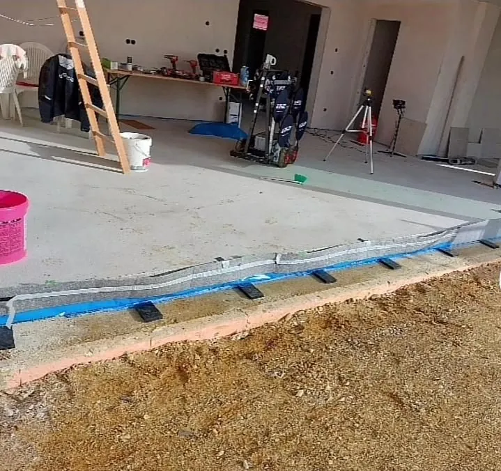

Bodenbeläge
Böden, die auch in zehn Jahren noch schließen.
Laminat, Parkett, Vinyl und Designbeläge – fachgerecht verlegt, mit geprüftem Untergrund, Trittschall, sauberen Sockelleisten und passenden Übergängen.
Untergrund
Der Boden entscheidet sich unter dem Boden.
Ob ein Belag nach fünf Jahren noch schließt, liegt selten am Belag. Es liegt am Untergrund. Deshalb messen wir, bevor wir verlegen – und sagen es Ihnen, wenn erst etwas anderes passieren muss.
- Restfeuchte messen. Bei Estrich prüfen wir, ob er belegreif ist. Zu früh verlegt heißt: Schüsseln, Fugen, Schimmel.
- Ebenheit prüfen. Ab einer gewissen Abweichung wird gespachtelt, sonst arbeitet die Klickverbindung sich auf.
- Trittschall einplanen. Im Obergeschoss und in Mietwohnungen ist die Dämmunterlage kein Zubehör, sondern Pflicht.
- Randfuge einhalten. Jeder Belag arbeitet. Wer bis an die Wand verlegt, bekommt Beulen.

Materialien
Was wann passt.
| Belag | Stärke | Achtung bei | Fußbodenheizung |
|---|---|---|---|
| Laminat | günstig, robust, riesige Dekorauswahl | Nässe – im Bad ungeeignet | ja, mit passender Unterlage |
| Parkett | echtes Holz, mehrfach abschleifbar | Kratzer, sehr trockene Raumluft | ja, bei geeigneter Holzart |
| Vinyl / Designbelag | wasserfest, leise, fußwarm | weiche Untergründe, Punktlasten | ja, ideal |
| Klick-Vinyl auf Träger | verlegefreundlich, gleicht viel aus | Bauhöhe an Türen | eingeschränkt |
Allgemeine Orientierung. Maßgeblich sind die Verlegehinweise des jeweiligen Herstellers, die wir vor dem Verlegen mit Ihnen durchgehen.
Leistungsumfang
Wir hören nicht am Belag auf.
- Alten Belag aufnehmen und entsorgen
- Untergrund reinigen, grundieren, bei Bedarf spachteln
- Trittschall- oder Dampfsperrunterlage einbauen
- Belag verlegen, auf Wunsch im Fischgrät- oder Schiffsbodenmuster
- Sockelleisten, Übergangsschienen und Anschlüsse an Türzargen
- Türblätter kürzen, wenn die neue Aufbauhöhe es nötig macht

Boden und Fenster in einem Zug
Wenn ohnehin gearbeitet wird, ist der Boden der richtige Moment. Beim Fenstertausch wird die Laibung geöffnet, danach muss oft der Anschluss zum Boden neu gemacht werden. Wer beides nacheinander von zwei Betrieben machen lässt, zahlt zweimal An- und Abfahrt und hat zweimal Staub in der Wohnung.
Wir planen das deshalb zusammen: erst Fenster und Türen, dann Laibung und Anschluss, dann der Boden. Ein Ansprechpartner, eine Terminkette, ein Angebot. Das ist der Vorteil, wenn ein Betrieb beides kann – und der Grund, warum wir beide Bereiche anbieten.
Der nächste Schritt
Welcher Boden passt in Ihre Räume?
Wir schauen uns den Untergrund an, bringen Muster mit und rechnen den Quadratmeterpreis inklusive aller Nebenarbeiten aus.